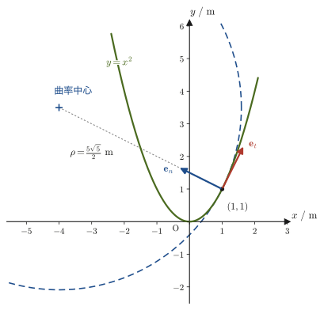

第3章曲線運動の記述 — 極座標と接線・法線加速度
ボールを投げれば放物線を描いて飛び，車はカーブを曲がり，人工衛星は地球のまわりを楕円軌道で回る——自然界の運動の大部分は，直線運動ではなく曲線運動である．高校物理では，等速円運動の向心加速度が $a=v^2/r$（$r$：円の半径）になることを公式として学んだはずである．しかし，車が曲がる道路のカーブは円弧とは限らず，曲率がなめらかに変化していく一般の曲線である．そのような一般の曲線上を動く物体の加速度は，どのように表せばよいだろうか．
この章では，曲線上を運動する物体の加速度を，進行方向（接線方向）の成分と，それに垂直な方向（法線方向）の成分に分解するという，力学のもう一つの強力な道具を身につける．驚くべきことに，加速度の法線方向の成分は，その瞬間その瞬間で曲線に最もよく重なる円（接触円）の半径——曲率半径 $\rho$（ロー）——を使って，高校で学んだ円運動の公式とまったく同じ形 $v^2/\rho$ で表せることが示される．つまり，高校の公式 $a=v^2/r$ は，実は円運動という特別な場合の結果に過ぎず，本章で学ぶ一般論に含まれているのである．
また，この章では平面上の位置を表すもう一つの座標系である極座標（$r,\theta$）についても学ぶ．極座標は，原点からの距離と角度で点の位置を表す方法で，中心対称な力（万有引力やクーロン力など）を扱う後の章（第6章，第8章）で本領を発揮する．本章ではまず，極座標そのものの定義と，極座標の基底ベクトル $\bm{e}_r,\bm{e}_\theta$ が直交座標の基底ベクトル $\bm{e}_x,\bm{e}_y$ の回転として表せることを確認する．
- 平面上の点を極座標 $(r,\theta)$ で表す方法と，直交座標 $(x,y)$ との相互変換 $x=r\cos\theta,\ y=r\sin\theta$
- 極座標の基底ベクトル $\bm{e}_r,\bm{e}_\theta$ が，直交座標の基底ベクトル $\bm{e}_x,\bm{e}_y$ を角 $\theta$ だけ回転させたものであること（回転行列による表示）
- 曲線運動の単位接線ベクトル $\bm{e}_t$（速度の向き）と単位法線ベクトル $\bm{e}_n$（曲率中心を向く向き）の定義
- $\bm{e}_t$ が時間とともに向きを変えること，その変化率 $\dd\bm{e}_t/\dd t$ が曲率半径 $\rho$ と速さ $v$ を用いて $(v/\rho)\bm{e}_n$ と表されることの，一行も省略しない導出
- 曲線運動の加速度の接線・法線分解 $\bm{a}=\dot v\,\bm{e}_t+(v^2/\rho)\,\bm{e}_n$（本章の中心的な結果．$\dot v=\dd v/\dd t$ で，変数の上の点は時間微分を表す）
- 曲率半径を速度と加速度だけから直接計算できる公式 $\rho=v^3/\abs{\bm{v}\times\bm{a}}$ と，そこから導かれるグラフ $y=f(x)$ の曲率半径の公式 $\rho=(1+f'^2)^{3/2}/\abs{f''}$
もとにしたノート：望月泰英『物理学ノート 力学』 pp. 5–7（p.8 は白紙）．
3.1 平面極座標への変換
高校数学以来，平面上の点の位置は $(x,y)$ という2つの数の組で表してきた．これは，原点 $\mathrm O$ から $x$ 軸方向・$y$ 軸方向にそれぞれどれだけ進むかを表す方法であり，直交座標（デカルト座標）と呼ばれる（大学数学 第16章 16.1）．しかし，点の位置を表す方法は $(x,y)$ だけではない．たとえば，レーダーで飛行機の位置を追うときは「レーダー基地からの距離」と「基準方向からの角度」を使うし，地図上で自分のいる場所を説明するときも「あの塔から北東の方向に $200\ \mathrm m$」のように，距離と角度で位置を伝えることが多い．このように，原点からの距離と角度の組で平面上の点を表す座標系を極座標（polar coordinates）という．
定義3.1 平面極座標系
平面上に原点 $\mathrm O$ と基準となる半直線（始線，多くの場合 $x$ 軸の正の部分）を1つ固定する．平面上の点 $P$ に対し，
- $r$：原点 $\mathrm O$ から点 $P$ までの距離（$r\ge0$）
- $\theta$：始線から，点 $P$ の方向まで反時計回りに測った角度（偏角，一般に $\mathrm{rad}$ で表す）
の組 $(r,\theta)$ を，点 $P$ の極座標という．このように定めた $r,\theta$ を座標として使う平面上の座標系を，平面極座標系という．偏角は $0\le\theta\lt2\pi$（または $-\pi\lt\theta\le\pi$）の範囲で考える．原点 $\mathrm O$ そのもの（$r=0$）では方向が定まらないので，$\theta$ は決まらない．
点 $P$ の直交座標を $(x,y)$ とすると，極座標 $(r,\theta)$ とのあいだには，次の図3.1のような関係がある．原点 $\mathrm O$，点 $P$，そして $P$ から $x$ 軸へ下ろした垂線の足の3点でつくられる直角三角形を考えると，三角比の定義（高校数学）から，斜辺の長さが $r$，$x$ 軸となす角が $\theta$ の直角三角形の底辺・高さがそれぞれ $x,y$ にあたる．したがって，
公式3.1 極座標と直交座標の変換
点 $P$ の直交座標を $(x,y)$，極座標を $(r,\theta)$ とすると，次の関係が成り立つ．
\begin{equation} x=r\cos\theta,\qquad y=r\sin\theta \label{eq:3-polar-to-xy} \end{equation} \begin{equation} r=\sqrt{x^2+y^2},\qquad \theta=\tan^{-1}\frac{y}{x} \label{eq:3-xy-to-polar} \end{equation}式\eqref{eq:3-xy-to-polar}は，式\eqref{eq:3-polar-to-xy}から $r,\theta$ を逆に求めた式である．実際，
$$ x^2+y^2=r^2\cos^2\theta+r^2\sin^2\theta=r^2(\cos^2\theta+\sin^2\theta)=r^2 $$（最後の等号は三角関数の基本公式 $\cos^2\theta+\sin^2\theta=1$，高校数学 第3章 3.1による）なので，$r\ge0$ に注意して両辺の平方根をとれば $r=\sqrt{x^2+y^2}$ が得られる．また，$x\neq0$ のとき，
$$ \frac{y}{x}=\frac{r\sin\theta}{r\cos\theta}=\tan\theta $$であるから，$\tan$ の逆関数（逆正接関数，$\tan^{-1}$ または $\arctan$）を使って $\theta=\tan^{-1}(y/x)$ と表せる．
注意：$\theta=\tan^{-1}(y/x)$ の落とし穴——象限に注意する
逆正接関数 $\tan^{-1}$ の主値（もっとも標準的に定める値）は $(-\pi/2,\pi/2)$ の範囲，つまり右半平面（$x\gt0$）の角度しか返さない．ところが，$y/x$ という比は $(x,y)$ と $(-x,-y)$ のように原点に関して対称な2点で同じ値になってしまう（たとえば $(1,1)$ でも $(-1,-1)$ でも $y/x=1$ である）．したがって，$\theta=\tan^{-1}(y/x)$ をそのまま使うと，点が実際には第2象限や第3象限（$x\lt0$）にあるのに，第1・第4象限の角度が返ってきてしまうことがある．正しい角度を得るには，$x,y$ の符号（すなわち点がどの象限にあるか）を別途確認し，必要なら $\theta$ に $\pi$ を加えるなどの補正をする．実用上は，$x,y$ の符号を自動的に判定してくれる2変数版の関数 $\operatorname{atan2}(y,x)$ を使うのが安全である（多くのプログラミング言語や関数電卓に標準搭載されている）．なお $x=0$ のときは $y/x$ が定義できないが，そのときは $y\gt0$ なら $\theta=\pi/2$，$y\lt0$ なら $\theta=3\pi/2$ である．本章の例題3.1(c)でこの点を具体的に確認する．
例題3.1 直交座標と極座標の相互変換
(a) 点 $(x,y)=(3,4)$（単位 $\mathrm m$）の極座標 $(r,\theta)$ を求めよ．(b) 極座標が $(r,\theta)=(5\ \mathrm m,\ \pi/3)$ の点の直交座標 $(x,y)$ を求めよ．(c) 点 $(x,y)=(-3,4)$（単位 $\mathrm m$）の極座標を求めよ．$\theta=\tan^{-1}(y/x)$ をそのまま使うと何が起こるかにも注意すること．
解答 (a) 公式3.1より，
$$ r=\sqrt{x^2+y^2}=\sqrt{3^2+4^2}=\sqrt{25}=5\ \mathrm m $$である．角度は $\theta=\tan^{-1}(4/3)$ であり，$(x,y)=(3,4)$ は $x\gt0,\ y\gt0$（第1象限）にあるので，主値をそのまま使ってよい：
$$ \theta=\tan^{-1}\frac{4}{3}\approx0.927\ \mathrm{rad}\ (\approx53.1^\circ) $$したがって $(r,\theta)\approx(5\ \mathrm m,\ 0.927\ \mathrm{rad})$ である．
(b) 公式3.1の順方向の式を使う．$\cos(\pi/3)=1/2,\ \sin(\pi/3)=\sqrt3/2$ なので，
$$ x=r\cos\theta=5\times\frac12=2.5\ \mathrm m,\qquad y=r\sin\theta=5\times\frac{\sqrt3}{2}=\frac{5\sqrt3}{2}\approx4.33\ \mathrm m $$である．
(c) 距離は $r=\sqrt{(-3)^2+4^2}=\sqrt{25}=5\ \mathrm m$ である．$y/x=4/(-3)=-4/3$ なので，$\tan^{-1}$ の主値は
$$ \tan^{-1}\Bigl(-\frac43\Bigr)\approx-0.927\ \mathrm{rad}\ (\approx-53.1^\circ) $$となる．これは $x\gt0,\ y\lt0$（第4象限）の角度で，実際の点 $(-3,4)$ は $x\lt0,\ y\gt0$（第2象限）にあるから，そのままでは誤りである．$\tan(\theta+\pi)=\tan\theta$ なので，$\pi$ を加えて補正すると，
$$ \theta=\tan^{-1}\Bigl(-\frac43\Bigr)+\pi\approx-0.927+3.142=2.214\ \mathrm{rad}\ (\approx126.9^\circ) $$となる．検算として $\cos\theta=x/r=-3/5=-0.6,\ \sin\theta=y/r=4/5=0.8$ を確かめると，$\cos2.214\approx-0.6,\ \sin2.214\approx0.8$ で，たしかに第2象限の角度である．したがって $(r,\theta)\approx(5\ \mathrm m,\ 2.214\ \mathrm{rad})$．（関数 $\operatorname{atan2}(4,-3)$ も同じ $2.214$ を返す．）
3.2 極座標系の基底ベクトル — 回転行列
直交座標には，$x$ 軸・$y$ 軸それぞれの正の向きを指す単位ベクトル $\bm{e}_x,\bm{e}_y$ があった．極座標にも，同じ役割を果たす単位ベクトルの組がある．点 $P$ の位置を $(r,\theta)$ で表すとき，
- $\bm{e}_r$：$r$ が増える向き，すなわち原点 $\mathrm O$ から点 $P$ へ向かう向きの単位ベクトル（動径方向）
- $\bm{e}_\theta$：$\theta$ が増える向き，すなわち点 $P$ を原点のまわりに反時計回りへわずかに動かした向きの単位ベクトル（周方向）
と定める．$\bm{e}_x,\bm{e}_y$ が平面上のどこでも同じ向きを指す（位置によらない）のに対し，$\bm{e}_r,\bm{e}_\theta$ は点 $P$ の位置（正確には角 $\theta$）によって向きが変わる点が大きな違いである——これは，後で曲線運動を考えるときにも繰り返し現れる重要な性質なので，ここでしっかり押さえておこう．
図3.2からわかるように，$(\bm{e}_r,\bm{e}_\theta)$ は $(\bm{e}_x,\bm{e}_y)$ を角 $\theta$ だけ反時計回りに回転させたものである．これを成分で確かめよう．$\bm{e}_r$ は $x$ 軸から角 $\theta$ の向きを指す単位ベクトルだから，その $x,y$ 成分はそれぞれ $\cos\theta,\sin\theta$ である（単位円上の点の座標，高校数学の三角関数の定義そのもの）．同様に，$\bm{e}_\theta$ は $\bm{e}_r$ をさらに $90^\circ$ 反時計回りに回転させた向きなので，$\cos(\theta+90^\circ)=-\sin\theta,\ \sin(\theta+90^\circ)=\cos\theta$（加法定理，高校数学 第5章）より成分は $(-\sin\theta,\cos\theta)$ である．まとめると，
公式3.2 極座標の基底ベクトル
\begin{equation} \bm{e}_r=\cos\theta\,\bm{e}_x+\sin\theta\,\bm{e}_y,\qquad \bm{e}_\theta=-\sin\theta\,\bm{e}_x+\cos\theta\,\bm{e}_y \label{eq:3-basis-polar} \end{equation}行列の形で書けば，
$$ \begin{bmatrix}\bm{e}_r\\ \bm{e}_\theta\end{bmatrix} =\begin{bmatrix}\cos\theta&\sin\theta\\-\sin\theta&\cos\theta\end{bmatrix} \begin{bmatrix}\bm{e}_x\\ \bm{e}_y\end{bmatrix} $$である．
数学の道具：回転行列との関係
大学数学 第16章16.4節（定理16.1）で学んだ $z$ 軸まわりの回転行列を，$xy$ 平面（2次元）に絞って書くと，角 $\theta$ の回転行列は $R(\theta)=\begin{bmatrix}\cos\theta&-\sin\theta\\\sin\theta&\cos\theta\end{bmatrix}$ である．これを縦ベクトルに左から掛けると，そのベクトルを原点のまわりに反時計回りに $\theta$ だけ回したベクトルが得られる．実際，$R(\theta)\begin{bmatrix}1\\0\end{bmatrix}=\begin{bmatrix}\cos\theta\\\sin\theta\end{bmatrix}$，$R(\theta)\begin{bmatrix}0\\1\end{bmatrix}=\begin{bmatrix}-\sin\theta\\\cos\theta\end{bmatrix}$ であり，これは「$\bm e_x,\bm e_y$ を $\theta$ 回したものが $\bm e_r,\bm e_\theta$」（図3.2右）という内容そのものである．
ところが，公式3.2の行列 $\begin{bmatrix}\cos\theta&\sin\theta\\-\sin\theta&\cos\theta\end{bmatrix}$ は $R(\theta)$ ではなく，その転置 $R(\theta)^{\mathrm T}$ に等しい．回転行列は直交行列なので $R(\theta)^{\mathrm T}=R(\theta)^{-1}=R(-\theta)$（逆行列は逆向きの回転）である．$\cos(-\theta)=\cos\theta,\ \sin(-\theta)=-\sin\theta$ を使えば，公式3.2は
$$ \begin{bmatrix}\cos(-\theta)&-\sin(-\theta)\\\sin(-\theta)&\cos(-\theta)\end{bmatrix} \begin{bmatrix}\bm{e}_x\\ \bm{e}_y\end{bmatrix} =\begin{bmatrix}\bm{e}_r\\ \bm{e}_\theta\end{bmatrix} $$と書き直せる．「$\theta$ 回転したのに $-\theta$ の行列になる」理由は，行列の掛け方の違いにある．$R(\theta)$ を掛けるときは，$\bm e_r$ の成分 $(\cos\theta,\sin\theta)$ が行列の第1列に並ぶのに対し，公式3.2では，ベクトルの組 $(\bm e_x,\bm e_y)$ を縦に並べて左から掛けているので，同じ成分が第1行に並ぶ．行と列が入れ替わる（転置）ので $R(-\theta)$ になるのである．確かめよう．$\theta=90^\circ$ では $\bm e_r=\bm e_y$，$\bm e_\theta=-\bm e_x$ だが，$R(-90^\circ)=\begin{bmatrix}0&1\\-1&0\end{bmatrix}$ を $(\bm e_x,\bm e_y)$ に掛けると $(\bm e_y,\,-\bm e_x)$ となって一致する．
もう一つの見方として，同じ行列はベクトルの成分の変換にも現れる．ベクトル $\bm V=V_x\bm e_x+V_y\bm e_y=V_r\bm e_r+V_\theta\bm e_\theta$ の成分は，$V_r=\bm V\cdot\bm e_r=V_x\cos\theta+V_y\sin\theta$，$V_\theta=\bm V\cdot\bm e_\theta=-V_x\sin\theta+V_y\cos\theta$，すなわち $\begin{bmatrix}V_r\\V_\theta\end{bmatrix}=R(-\theta)\begin{bmatrix}V_x\\V_y\end{bmatrix}$ である．基底のほうを $\theta$ 回したので，同じベクトルの成分は逆向きに $-\theta$ 回転して見える（図3.2右）．たとえば $\bm V=\bm e_x$ なら $(V_r,V_\theta)=(\cos\theta,-\sin\theta)$ で，これは $\bm e_x=\cos\theta\,\bm e_r-\sin\theta\,\bm e_\theta$（公式3.2の逆の関係）を意味する．なお，この行列の意味は大学数学 第16章16.6節（極座標での速度・加速度）の「回転行列の復習」の囲みでも扱われている．本書 第6章では，この関係を使って極座標での速度・加速度 $\bm{v}=\dot r\,\bm{e}_r+r\dot\theta\,\bm{e}_\theta$ を導く．
イメージ：なぜ $\bm{e}_r,\bm{e}_\theta$ は位置によって向きが変わるのか
$\bm{e}_x,\bm{e}_y$ は「東」「北」のような絶対的な方角なので，平面上のどこにいても向きは変わらない．一方，$\bm{e}_r$ は「原点から今いる場所への方角」なので，立つ場所（角 $\theta$）が変われば当然向きも変わる——地図の上で「北」は常に同じ向きだが，「自分の家の方向」は自分がどこにいるかによって変わるのと同じことである．この「基底ベクトルの向きが位置によって変わる」という性質は，円筒座標・球座標でも同様に現れる一般的な性質であり（大学数学 第16章 16.2–16.3），曲線に沿って動く物体を扱う3.3節以降でも中心的な役割を果たす．
例題3.2 基底ベクトルの成分と直交性
$\theta=\pi/3\ (=60^\circ)$ の位置における極座標の基底ベクトル $\bm{e}_r,\bm{e}_\theta$ を，$\bm{e}_x,\bm{e}_y$ の成分で求めよ．また，$\bm{e}_r,\bm{e}_\theta$ がどちらも単位ベクトルであり，互いに直交する（$\bm{e}_r\cdot\bm{e}_\theta=0$）ことを確かめよ．
解答 $\cos(\pi/3)=1/2,\ \sin(\pi/3)=\sqrt3/2$ を公式3.2に代入すると，
$$ \bm{e}_r=\frac12\bm{e}_x+\frac{\sqrt3}{2}\bm{e}_y=\Bigl[\frac12,\ \frac{\sqrt3}{2}\Bigr],\qquad \bm{e}_\theta=-\frac{\sqrt3}{2}\bm{e}_x+\frac12\bm{e}_y=\Bigl[-\frac{\sqrt3}{2},\ \frac12\Bigr] $$である．大きさはそれぞれ
$$ \abs{\bm{e}_r}=\sqrt{\left(\frac12\right)^2+\left(\frac{\sqrt3}{2}\right)^2}=\sqrt{\frac14+\frac34}=\sqrt1=1,\qquad \abs{\bm{e}_\theta}=\sqrt{\left(-\frac{\sqrt3}{2}\right)^2+\left(\frac12\right)^2}=1 $$となり，たしかにどちらも単位ベクトルである（一般の $\theta$ でも $\cos^2\theta+\sin^2\theta=1$ より常に成り立つ）．内積は
$$ \bm{e}_r\cdot\bm{e}_\theta=\frac12\times\left(-\frac{\sqrt3}{2}\right)+\frac{\sqrt3}{2}\times\frac12=-\frac{\sqrt3}{4}+\frac{\sqrt3}{4}=0 $$であり，直交することが確かめられた（一般の $\theta$ についても $\bm{e}_r\cdot\bm{e}_\theta=-\cos\theta\sin\theta+\sin\theta\cos\theta=0$ となることを，演習3.4で確認する）．
3.3 単位接線ベクトルと速度
ここからは，極座標を離れて，一般の曲線上を動く質点の運動を考える．質点の位置を，時刻 $t$ の関数として
$$ \bm{r}(t)=[x(t),\,y(t),\,z(t)] $$と表す（3次元空間内の運動として扱うが，平面運動なら常に $z(t)=0$ とすればよい）．質点が描く軌跡は，一般には直線ではなく曲線になる．この曲線に対して，次の2つの単位ベクトルを定義する．
定義3.2 単位接線ベクトルと単位主法線ベクトル
曲線上の各点において，運動の向き，すなわち曲線の接線方向を向く単位ベクトルを単位接線ベクトル（unit tangent vector）といい，$\bm{e}_t$ と表す．また，$\bm e_t$ を弧の長さ（弧長）$S$ で微分したベクトル $\dd\bm e_t/\dd S$ が $\bm0$ でないとき，その向きの単位ベクトルを単位主法線ベクトル（unit principal normal vector）といい，$\bm{e}_n$ と表す．$\bm e_t\cdot\bm e_t=1$（一定）を $S$ で微分すると $\bm e_t\cdot\dd\bm e_t/\dd S=0$ となるので（3.4節で詳しく確かめる），$\bm{e}_t$ と $\bm{e}_n$ は常に直交する単位ベクトルである（$\bm{e}_t\cdot\bm{e}_n=0,\ \abs{\bm{e}_t}=\abs{\bm{e}_n}=1$）．平面上の曲線では，$\bm e_n$ は曲線が曲がっていく側（凹んでいる側），すなわち曲率中心（定義3.3のあとで定める）のある側を向く．3次元の曲線では，曲がっていく平面が点ごとに変わりうるが，$\bm e_n$ の定義は同じである．直線では $\dd\bm e_t/\dd S=\bm0$ なので，$\bm e_n$ は定まらない．
質点の速度ベクトルは，位置ベクトルの時間微分（大学数学 第17章 定義17.1）として
$$ \bm{v}(t)=\dot{\bm{r}}(t)=\left[\frac{\dd x}{\dd t},\ \frac{\dd y}{\dd t},\ \frac{\dd z}{\dd t}\right] $$と表される（$\dot{\bm r}$：アール・ドット，$\bm r$ の時間微分 $\dd\bm r/\dd t$ を表す，ニュートンの記法）．大学数学第17章のイメージ図（17.1節）で見たとおり，微小時間 $\Delta t$ における変位ベクトル $\bm r(t+\Delta t)-\bm r(t)$ を $\Delta t$ で割って $\Delta t\to0$ の極限をとったものが $\bm v(t)$ であり，この変位ベクトルは曲線上の2点を結ぶ弦の向きを持つから，$\Delta t\to0$ の極限で曲線の接線方向を向く．すなわち $[\dd x,\dd y,\dd z]$ は接線方向のベクトルであり，したがって $\bm v(t)$ もまた接線方向を向く．速度ベクトルの大きさ（速さ，speed）を
$$ v\equiv\abs{\bm v(t)}=\sqrt{\dot x^2+\dot y^2+\dot z^2} $$とおけば，$\bm v(t)$ は「大きさ $v$，向き $\bm e_t$」のベクトルとして次のように書ける．
定理3.1 速度ベクトルは接線方向を向く
\begin{equation} \bm{v}(t)=v(t)\,\bm{e}_t(t) \label{eq:3-v-et} \end{equation}すなわち，速度ベクトルの向きは常に軌道の接線方向であり，その大きさが速さ $v$ である．
注意：$\bm{e}_t$ も時間とともに変化する
直交座標の基底ベクトル $\bm e_x,\bm e_y,\bm e_z$ は，時間が経っても向きが変わらない定ベクトルだった．しかし $\bm e_t$ は，3.2節の $\bm e_r,\bm e_\theta$ と同じように，曲線に沿って質点が動くにつれて向きが変わる（曲線が曲がっているところを通過すれば，進行方向＝接線の向きも変わるのは当然だろう）．つまり，$\bm e_t$ は時刻 $t$ の関数 $\bm e_t(t)$ であり，一般に $\dfrac{\dd}{\dd t}\bm e_t\neq\bm 0$ である．このことは，次に加速度を計算するときに重要な意味を持つ——加速度は速度の時間微分だから，式\eqref{eq:3-v-et}を微分するときに，$v(t)$ だけでなく $\bm e_t(t)$ も時間で微分しなければならないのである．
例題3.3 放物線上を動く点の速度と接線ベクトル
平面上を動く点の位置が，時刻 $t$（秒）において $\bm r(t)=[t,\ t^2,\ 0]$（メートル，$t\ge0$）で与えられている．これは，$xy$ 平面上で $y=x^2$ という放物線の上を動く点である（$x=t,\ y=t^2=x^2$ だから）．(a) 速度ベクトル $\bm v(t)$ と速さ $v(t)$ を，時刻 $t$ の関数として求めよ．(b) 単位接線ベクトル $\bm e_t(t)$ を求めよ．(c) $t=1$（点 $(1,1)$ を通過する瞬間）における $\bm v,\ v,\ \bm e_t$ を求めよ．
解答 (a) 各成分を $t$ で微分すると（定義17.1），
$$ \bm v(t)=\dot{\bm r}(t)=[1,\ 2t,\ 0]\ \mathrm{m/s} $$速さは
$$ v(t)=\abs{\bm v(t)}=\sqrt{1^2+(2t)^2+0^2}=\sqrt{1+4t^2}\ \mathrm{m/s} $$である．(b) 定理3.1より $\bm e_t=\bm v/v$ なので，
$$ \bm e_t(t)=\frac{1}{\sqrt{1+4t^2}}\bigl[1,\ 2t,\ 0\bigr] $$である（$t$ によらず $\abs{\bm e_t}=1$ になっていることを確認しておこう：$\abs{\bm e_t}^2=\dfrac{1^2+(2t)^2}{1+4t^2}=1$）．(c) $t=1$ を代入すると，
$$ \bm v(1)=[1,\ 2,\ 0]\ \mathrm{m/s},\qquad v(1)=\sqrt{1+4}=\sqrt5\ \mathrm{m/s}\approx2.24\ \mathrm{m/s} $$ $$ \bm e_t(1)=\frac{1}{\sqrt5}[1,\ 2,\ 0]=\left[\frac{1}{\sqrt5},\ \frac{2}{\sqrt5},\ 0\right]\approx[0.447,\ 0.894,\ 0] $$である．この点 $(1,1)$ における $\bm e_n$ は，まだ本節の道具だけでは求められない——3.4節で加速度の分解を学んだあと，例題3.4で同じ点に戻って $\bm e_n$ まで求める．
3.4 単位法線ベクトルと加速度の接線・法線成分
加速度は速度の時間微分 $\bm a=\dot{\bm v}$ である．式\eqref{eq:3-v-et}（$\bm v=v\bm e_t$）を時間で微分すると，$v(t)$ と $\bm e_t(t)$ の積の微分になるので，積の微分公式（大学数学 第17章 公式17.2の証明で確認した，スカラー関数×ベクトル関数の積の微分の形）より，
$$ \bm a=\frac{\dd}{\dd t}\bm v=\frac{\dd v}{\dd t}\bm e_t+v\,\frac{\dd}{\dd t}\bm e_t $$となる．3.3節の注意で確認したとおり $\dfrac{\dd}{\dd t}\bm e_t$ は一般に $\bm 0$ ではないので，この第2項を求めなければ加速度は計算できない．本節の目標は，この $\dfrac{\dd}{\dd t}\bm e_t$ を具体的に求めることである．
そのために，まず「曲線のきつさ」を数で表す準備をしよう．半径 $R$ の円周上を弧の長さ $\Delta S$ だけ進むと，中心角は $\Delta\varphi=\Delta S/R$（弧度法：弧の長さ＝半径×中心角，高校数学 第3章 3.4）だけ変わり，接線の向きもちょうど同じ角 $\Delta\varphi$ だけ回転する．つまり，円では $R=\Delta S/\Delta\varphi$ である．一般の曲線でも，各点のごく近くだけを見れば円の一部とみなせる．そこで，この比 $\Delta S/\Delta\varphi$ の極限を，一般の曲線における「円の半径にあたるもの」として定義する．
定義3.3 曲率半径と曲率中心
曲線上を，弧の長さ（弧長，大学数学 第17章 定義17.2）にして $\Delta S$ だけ進む間に，接線の向き（$\bm e_t$ の向き）が角 $\Delta\varphi\ge0$（回転の大きさ．ラジアン）だけ回転したとする．弧長の変化に対する回転角の割合の逆数の極限
\begin{equation} \rho\equiv\lim_{\Delta S\to0}\frac{\Delta S}{\Delta\varphi}=\frac{\dd S}{\dd\varphi} \label{eq:3-rho-def} \end{equation}を，その点における曲率半径（radius of curvature）という．$\rho$ が大きいほど，接線の向きがゆっくりとしか変わらない——つまり曲線はほとんどまっすぐ（緩やかなカーブ）である．逆に $\rho$ が小さいほど，接線の向きが急激に変わる，きついカーブになる．直線では，どこまで進んでも接線の向きは変わらない（$\Delta\varphi=0$）ので $\rho=\infty$ と考えてよい．半径 $R$ の円周上では，弧長 $\Delta S$ だけ進むと接線もちょうど中心角と同じ $\Delta\varphi=\Delta S/R$ だけ回転する（円周上の性質そのものである）ので $\rho=R$ となる——すなわち，円の曲率半径はその円自身の半径に等しい．このことは3.5節の例題3.5で直接確かめる．さらに，曲線上の点 $P$ から $\bm e_n$ の向きに距離 $\rho$ だけ進んだ点を曲率中心（center of curvature），その点を中心とする半径 $\rho$ の円を接触円（曲率円，osculating circle）という．接触円は，点 $P$ で曲線に最もよく重なる円である．隣り合う2点での法線（$\bm e_n$ を通る直線）の交点は，$\Delta S\to0$ の極限で曲率中心に近づく（図3.5左の点 $\mathrm C$）．なお，$\bm e_t$ が定まらない $v=0$ の点では，曲率半径は考えない．
見通し：等速円運動で $\bm e_t$ の変化率を先に計算してみる
結果を先取りして，いちばん簡単な場合で $\dd\bm e_t/\dd t$ を計算してみよう．半径 $R$ の円周上を一定の角速度 $\omega$ で回る点 $\bm r(t)=[R\cos\omega t,\ R\sin\omega t,\ 0]$ の速度は $\bm v=[-R\omega\sin\omega t,\ R\omega\cos\omega t,\ 0]$，速さは $v=R\omega$（一定）である．したがって単位接線ベクトルは
$$ \bm e_t=\frac{\bm v}{v}=[-\sin\omega t,\ \cos\omega t,\ 0] $$で，時間で微分すると
$$ \frac{\dd\bm e_t}{\dd t}=[-\omega\cos\omega t,\ -\omega\sin\omega t,\ 0]=-\omega\,[\cos\omega t,\ \sin\omega t,\ 0]=\frac{v}{R}\,(-\bm e_r) $$となる（$\omega=v/R$ を使った．$\bm e_r=[\cos\omega t,\sin\omega t,0]$ は円の中心から点へ向かう単位ベクトル）．すなわち，$\bm e_t$ の変化率は，大きさが $v/R$，向きが円の中心向き（$-\bm e_r$，これが $\bm e_n$）である．一般の曲線でも，$R$ のかわりに曲率半径 $\rho$ を使えば同じ形 $\dd\bm e_t/\dd t=(v/\rho)\bm e_n$ になる——これから一行ずつ示すのは，その一般化である．
さて，時刻 $t$ から $t+\Delta t$ のあいだの，単位接線ベクトルの変化量を
$$ \Delta\bm e_t\equiv\bm e_t(t+\Delta t)-\bm e_t(t) $$とおく．ベクトルの微分の定義（成分ごとの極限，大学数学 第17章 定義17.1）により，$\bm e_t$ の時間微分は
$$ \frac{\dd\bm e_t}{\dd t}=\lim_{\Delta t\to0}\frac{\Delta\bm e_t}{\Delta t} $$であり，この左辺が求めたいものである．曲線上の，時刻 $t,t+\Delta t$ に対応する2点を $P_0,P_1$ とし，$P_0$ から $P_1$ までの間に接線の向きが角 $\varphi$ だけ回転したとしよう（図3.5左）．$\bm e_t(t)$ も $\bm e_t(t+\Delta t)$ も大きさ1の単位ベクトルだから，これらを同じ始点から描くと，2つのベクトルの終点は，半径1・中心角 $\varphi$ の扇形の両端（弧の両端）にあたる（図3.5右）．$\varphi$ が十分小さいとき，弦の長さ（$\Delta\bm e_t$ の大きさ）は弧の長さで近似でき，半径1の弧の長さはちょうど中心角 $\varphi$（ラジアンの定義そのもの）に等しいから，
$$ \abs{\Delta\bm e_t}\fallingdotseq\abs{\bm e_t(t)}\cdot\varphi=1\cdot\varphi=\varphi $$という近似が成り立つ（$\fallingdotseq$ は「ほぼ等しい」を表す記号．$\varphi\to0$ で誤差は0に近づく）．
一方，$P_0$ から $P_1$ までの曲線に沿った実際の弧の長さを $\Delta S$ とすると，定義3.3の曲率半径の関係 $\Delta S\fallingdotseq\rho\varphi$（弧長は「半径 $\times$ 中心角」）より，
$$ \varphi\fallingdotseq\frac{\Delta S}{\rho} $$である．これを先ほどの $\abs{\Delta\bm e_t}\fallingdotseq\varphi$ に代入すると，
$$ \abs{\Delta\bm e_t}\fallingdotseq\frac{\Delta S}{\rho} \qquad\therefore\quad \left|\frac{\Delta\bm e_t}{\Delta t}\right|\fallingdotseq\frac{1}{\rho}\cdot\frac{\Delta S}{\Delta t} $$となる（両辺を $\Delta t$ で割った）．ここで $\Delta t\to0$ の極限をとる．左辺は，ベクトルの微分の定義（大学数学 第17章 式17.1と同じ形）より
$$ \left|\frac{\Delta\bm e_t}{\Delta t}\right|\ \longrightarrow\ \left|\frac{\dd\bm e_t}{\dd t}\right| $$に近づく．右辺の $\dfrac{\Delta S}{\Delta t}$（微小時間あたりに進んだ弧長）は，まさに速さ $v$ の定義そのものである（大学数学第17章17.2節で弧長 $S=\int\abs{\bm r\,'(t)}\dd t$ を学んだが，これを微分すれば $\dd S/\dd t=\abs{\bm r\,'(t)}=v$ となる——弧長を時間で微分すると速さになる，というのは高校で「道のりの微分は速さ」と習ったのと同じ関係である）ので，$\Delta t\to0$ で $\dfrac{\Delta S}{\Delta t}\to v$ となる．したがって，
\begin{equation} \left|\frac{\dd\bm e_t}{\dd t}\right|=\frac{v}{\rho} \label{eq:3-det-magnitude} \end{equation}であることがわかった．残るは向きである．
なぜ $\dd\bm e_t/\dd t$ は $\bm e_n$ に平行なのか——2通りの説明
幾何学的な説明：図3.5右の三角形で，$\Delta t\to0$（したがって $\varphi\to0$）の極限を考えると，二等辺三角形の頂角 $\varphi$ が0に近づくので，底辺 $\Delta\bm e_t$ の向きは，2本の等辺 $\bm e_t(t),\bm e_t(t+\Delta t)$ のどちらに対しても直角に近づいていく．すなわち，極限で $\Delta\bm e_t$（したがって $\dd\bm e_t/\dd t$）は $\bm e_t$ に垂直になる．さらに，平面上の曲線では，$P_0$ から $P_1$ へ向かうとき，接線は曲線が曲がっていく側（曲率中心の側）へ回転していくので，$\Delta\bm e_t=\bm e_t(t+\Delta t)-\bm e_t(t)$ も曲率中心の側，つまり $\bm e_n$ と同じ向きを指す．
代数的な説明：$\bm e_t$ は単位ベクトルなので，常に $\bm e_t\cdot\bm e_t=1$（一定）である．この両辺を時間で微分すると，内積の微分公式（積の微分公式の内積版，$\dfrac{\dd}{\dd t}(\bm a\cdot\bm b)=\dot{\bm a}\cdot\bm b+\bm a\cdot\dot{\bm b}$）より，
$$ \frac{\dd}{\dd t}(\bm e_t\cdot\bm e_t)=2\,\bm e_t\cdot\frac{\dd\bm e_t}{\dd t}=\frac{\dd}{\dd t}(1)=0 \qquad\therefore\quad \bm e_t\cdot\frac{\dd\bm e_t}{\dd t}=0 $$である．内積が0ということは，$\dd\bm e_t/\dd t$ は $\bm e_t$ に垂直だということになる（一般に，大きさが変わらないベクトルの時間微分は，そのベクトル自身に垂直である——これは単位ベクトルに限らず，大きさが一定のベクトル全般に成り立つ有用な性質である）．3次元の曲線では，$\bm e_t$ に垂直な向きは1通りではなく，2次元の平面（法平面）全体に広がっているので，垂直であることだけでは向きは決まらない．その向きを決めているのが $\bm e_n$ の定義（定義3.2）である．弧長 $S$ は時間とともに増えるので，合成関数の微分より $\dfrac{\dd\bm e_t}{\dd t}=\dfrac{\dd S}{\dd t}\dfrac{\dd\bm e_t}{\dd S}=v\,\dfrac{\dd\bm e_t}{\dd S}$ であり，$v\gt0$ だから，$\dd\bm e_t/\dd t$ は $\dd\bm e_t/\dd S$ と同じ向き，すなわち定義3.2により $\bm e_n$ の向きである．したがって，$\dd\bm e_t/\dd t$ は $\bm e_n$ の正の向きの実数倍になる．
以上の2通りの議論と式\eqref{eq:3-det-magnitude}を合わせると，$\dd\bm e_t/\dd t$ は大きさ $v/\rho$，向き $\bm e_n$ のベクトルであることがわかる：
\begin{equation} \frac{\dd\bm e_t}{\dd t}=\frac{v}{\rho}\bm e_n \label{eq:3-det-vector} \end{equation}これを，本節の最初に立てた加速度の式に代入すれば，本章の中心的な結果が得られる．
定理3.2 曲線運動の加速度の接線・法線成分
曲線上を動く質点の加速度は，単位接線ベクトル $\bm e_t$ 方向の成分と単位主法線ベクトル $\bm e_n$ 方向の成分の和として，次のように表される．
\begin{equation} \bm a=\frac{\dd v}{\dd t}\bm e_t+\frac{v^2}{\rho}\bm e_n \label{eq:3-accel-tn} \end{equation}第1項 $\dfrac{\dd v}{\dd t}\bm e_t$ を接線加速度，第2項 $\dfrac{v^2}{\rho}\bm e_n$ を法線加速度という（等速円運動の場合は，円の中心を向く向心加速度に一致する）．接線加速度は速さ $v$ そのものの変化（速くなる・遅くなる）を表し，法線加速度は速度の向きの変化（曲がる）を表す．
次元の確認：$\dd v/\dd t$ の単位は $\mathrm{(m/s)/s=m/s^2}$，$v^2/\rho$ の単位は $\mathrm{(m/s)^2/m=m/s^2}$ で，どちらも加速度の単位に一致する．また，式\eqref{eq:3-det-vector}の $v/\rho$ の単位は $\mathrm{(m/s)/m=1/s}$ で，単位ベクトル（無次元）の時間変化率として正しい．なお，$\rho=\infty$ の点（直線部分など）では $v^2/\rho=0$ となり，加速度は接線成分だけになる．
イメージ：高校物理の等速円運動の公式は特別な場合だった
高校物理で学んだ等速円運動の向心加速度の公式 $a=v^2/r$ を思い出そう．等速円運動では，速さ $v$ が一定なので $\dd v/\dd t=0$（接線加速度がない）であり，かつ曲率半径 $\rho$ は円の半径 $r$ そのものなので（定義3.3のあとの説明），定理3.2は $\bm a=(v^2/r)\bm e_n$ となる——これはまさに，大きさ $v^2/r$ で中心（$\bm e_n$ の向き）を向く，高校で学んだ向心加速度の公式である．定理3.2は，これを「速さが変化してもよく，円である必要もない，一般の曲線運動」に拡張したものになっている．
例題3.4 放物線上の点における単位法線ベクトルと曲率半径
例題3.3の続きである．$\bm r(t)=[t,\ t^2,\ 0]$（m）で運動する点について，$t=1$（点 $(1,1)$）における加速度 $\bm a$，単位法線ベクトル $\bm e_n$，曲率半径 $\rho$ を求めよ．
解答 速度は例題3.3より $\bm v(t)=[1,2t,0]$ だから，加速度は
$$ \bm a(t)=\dot{\bm v}(t)=[0,\ 2,\ 0]\ \mathrm{m/s^2}\quad(t\text{ によらず一定}) $$である．一方，速さは $v(t)=\sqrt{1+4t^2}$ なので，接線加速度成分は
$$ \frac{\dd v}{\dd t}=\frac{4t}{\sqrt{1+4t^2}} \qquad\therefore\quad \left.\frac{\dd v}{\dd t}\right|_{t=1}=\frac{4}{\sqrt5}=\frac{4\sqrt5}{5}\ \mathrm{m/s^2}\approx1.79\ \mathrm{m/s^2} $$である（合成関数の微分，$\dfrac{\dd}{\dd t}\sqrt{1+4t^2}=\dfrac{8t}{2\sqrt{1+4t^2}}=\dfrac{4t}{\sqrt{1+4t^2}}$）．例題3.3(c)より $\bm e_t(1)=\bigl[1/\sqrt5,\ 2/\sqrt5,\ 0\bigr]$ だったから，接線成分ベクトルは
$$ \frac{\dd v}{\dd t}\bm e_t=\frac{4}{\sqrt5}\left[\frac{1}{\sqrt5},\frac{2}{\sqrt5},0\right]=\left[\frac45,\ \frac85,\ 0\right] $$である．定理3.2より $\bm a=(\dd v/\dd t)\bm e_t+(v^2/\rho)\bm e_n$ なので，法線成分ベクトルは全体から接線成分を引いた残りとして求まる：
$$ \frac{v^2}{\rho}\bm e_n=\bm a-\frac{\dd v}{\dd t}\bm e_t=[0,2,0]-\left[\frac45,\frac85,0\right]=\left[-\frac45,\ \frac25,\ 0\right] $$この大きさが $v^2/\rho$ であり，向きが $\bm e_n$ である．大きさは
$$ \frac{v^2}{\rho}=\left|\left[-\frac45,\frac25,0\right]\right|=\sqrt{\left(\frac45\right)^2+\left(\frac25\right)^2}=\sqrt{\frac{16}{25}+\frac4{25}}=\sqrt{\frac{20}{25}}=\frac{2}{\sqrt5}=\frac{2\sqrt5}{5}\ \mathrm{m/s^2} $$したがって，単位法線ベクトルは
$$ \bm e_n(1)=\frac{1}{2\sqrt5/5}\left[-\frac45,\frac25,0\right]=\left[-\frac{2}{\sqrt5},\ \frac{1}{\sqrt5},\ 0\right]\approx[-0.894,\ 0.447,\ 0] $$である（$\bm e_t\cdot\bm e_n=\frac{1}{\sqrt5}\times\bigl(-\frac2{\sqrt5}\bigr)+\frac2{\sqrt5}\times\frac1{\sqrt5}=-\frac25+\frac25=0$ で直交性も確認できる）．曲率半径は，$v(1)^2=(\sqrt5)^2=5$ を使って，
$$ \rho=\frac{v^2}{2\sqrt5/5}=\frac{5}{2\sqrt5/5}=\frac{5\sqrt5}{2}\ \mathrm{m}\approx5.59\ \mathrm{m} $$である．この結果は，3.5節で導く公式3.4（$y=f(x)$ の曲率半径 $\rho=(1+f'(x)^2)^{3/2}/\abs{f''(x)}$）に $f'(x)=2x,\ f''(x)=2$ を $x=1$ で代入して得られる $\rho=(1+4)^{3/2}/2=5\sqrt5/2\ \mathrm m$ とも完全に一致する．図3.7に，この点における $\bm e_t,\bm e_n$ と，半径 $\rho$ の接触円（曲線に接しながら最もよく重なる円）を描いた．

3.5 曲率半径の公式と例題
定理3.2の $\bm a=(\dd v/\dd t)\bm e_t+(v^2/\rho)\bm e_n$ を使えば，例題3.4で行ったように，加速度 $\bm a$ から接線成分を差し引いて法線成分の大きさを求め，そこから曲率半径 $\rho$ を計算できる．しかし，$\bm e_t,\bm e_n$ をいちいち求めなくても，速度 $\bm v(t)$ と加速度 $\bm a(t)$ さえわかれば，外積を使って $\rho$ を直接計算できる公式がある．
導出：曲率半径を $\bm v,\bm a$ から直接求める公式
定理3.2の式\eqref{eq:3-accel-tn}の両辺と，$\bm v=v\bm e_t$（式\eqref{eq:3-v-et}）の外積をとる：
$$ \bm v\times\bm a=(v\bm e_t)\times\left(\frac{\dd v}{\dd t}\bm e_t+\frac{v^2}{\rho}\bm e_n\right) =v\frac{\dd v}{\dd t}\,(\bm e_t\times\bm e_t)+\frac{v^3}{\rho}\,(\bm e_t\times\bm e_n) $$（外積の分配法則，大学数学 第15章 15.3節）．ここで，同じ向きのベクトルどうしの外積は $\bm e_t\times\bm e_t=\bm 0$（大学数学第15章15.3節，外積の定義より，平行なベクトルの外積は常に $\bm 0$）なので第1項は消える．また，$\bm e_t,\bm e_n$ は互いに直交する単位ベクトルなので，$\bm e_t\times\bm e_n$ は大きさ $\abs{\bm e_t}\abs{\bm e_n}\sin90^\circ=1$ の単位ベクトルである（向きは $\bm e_t,\bm e_n$ の両方に垂直，右ねじの法則で決まる向き．平面運動なら $z$ 軸方向）．したがって，
$$ \bm v\times\bm a=\frac{v^3}{\rho}(\bm e_t\times\bm e_n),\qquad \abs{\bm e_t\times\bm e_n}=1 $$であり，両辺の大きさをとると
$$ \abs{\bm v\times\bm a}=\frac{v^3}{\rho} $$となる．$\rho\gt0$ に注意してこれを $\rho$ について解けば，求める公式が得られる．
（導出終わり）
公式3.3 曲率半径（速度・加速度から直接求める）
\begin{equation} \rho=\frac{v^3}{\abs{\bm v\times\bm a}} \label{eq:3-rho-formula} \end{equation}ただし $v\ne0$ かつ $\bm v\times\bm a\ne\bm 0$ のときに限る．$\bm v\times\bm a=\bm 0$ の点（直線運動をしているとき，および接線の向きが一瞬変わらない変曲点など）では右辺の分母が0になり，$\rho=\infty$ とみなす（このとき $\bm e_n$ は定まらない）．質点の速度 $\bm v(t)$ と加速度 $\bm a(t)$ がわかれば，接線・法線への分解を経由しなくても，曲率半径を直接計算できる．平面運動（$\bm v,\bm a$ がともに $xy$ 平面内）のときは，$\bm v\times\bm a$ は $z$ 成分しか持たず，$\abs{\bm v\times\bm a}=\abs{v_x a_y-v_y a_x}$ と成分だけで計算できる．
公式3.3の特別な場合として，グラフ $y=f(x)$ の曲率半径の公式が導ける．例題3.4と演習3.5で使うので，ここで導いておこう．
導出：グラフ $y=f(x)$ の曲率半径
曲率半径は曲線の形だけで決まる量なので，曲線上の点をどのように動かして調べてもよい．そこで，$x$ 座標が時間と同じ割合で増えていく運動 $\bm r=[x,\ f(x),\ 0]$（$x$ を時間のかわりの変数とみなす．$\dd x/\dd x=1$）を考える．各成分を $x$ で微分すると，
$$ \bm v=[1,\ f'(x),\ 0],\qquad \bm a=[0,\ f''(x),\ 0] $$である（$f''(x)$ は $f'(x)$ をもう一度 $x$ で微分したもの）．速さは $v=\sqrt{1+f'(x)^2}$．外積は，成分ごとの公式（大学数学第15章15.4節）より
$$ \bm v\times\bm a=[\,f'(x)\cdot0-0\cdot f''(x),\ \ 0\cdot0-1\cdot0,\ \ 1\cdot f''(x)-f'(x)\cdot0\,]=[0,\ 0,\ f''(x)] $$なので $\abs{\bm v\times\bm a}=\abs{f''(x)}$ である．これらを公式3.3に代入すればよい．
（導出終わり）
公式3.4 グラフ $y=f(x)$ の曲率半径
\begin{equation} \rho=\frac{\bigl(1+f'(x)^2\bigr)^{3/2}}{\abs{f''(x)}} \label{eq:3-rho-graph} \end{equation}$f''(x)=0$ となる点（変曲点）では $\rho=\infty$ である．たとえば $y=x^2$ の点 $(1,1)$ では $f'=2,\ f''=2$ なので $\rho=(1+4)^{3/2}/2=5\sqrt5/2$，$y=\sin x$ の頂上 $x=\pi/2$ では $f'=0,\ f''=-1$ なので $\rho=1/1=1$ となる．
公式3.3を使って，次の例3.1で曲率半径を2通りの方法で求め，結果を比べてみよう．
例3.1 曲線上を動く点の速さと曲率半径
質点 $\mathrm P$ の位置が $\bm r(t)=\left[\dfrac{t^2}{2},\ t,\ 2-t\right]$（成分の単位は $\mathrm m$，$t$ は $\mathrm s$ で測る）で表されるとき，時刻 $t$ における速さ $v$ と曲率半径 $\rho$ を求めよ．また，$t=0$ における $\bm e_t,\bm e_n$ を求めよ．
解答 各成分を微分して，
$$ \bm v(t)=\dot{\bm r}(t)=[t,\ 1,\ -1]\ \mathrm{m/s} \qquad\therefore\quad v=\abs{\bm v(t)}=\sqrt{t^2+1^2+(-1)^2}=\sqrt{t^2+2}\ \mathrm{m/s} $$である．接線加速度成分は
$$ \frac{\dd v}{\dd t}=\frac{\dd}{\dd t}\sqrt{t^2+2}=\frac{2t}{2\sqrt{t^2+2}}=\frac{t}{\sqrt{t^2+2}}\ \mathrm{m/s^2} $$だから，定理3.2より加速度を接線・法線成分に分解すると
\begin{equation} \bm a=\frac{\dd v}{\dd t}\bm e_t+\frac{v^2}{\rho}\bm e_n=\frac{t}{\sqrt{t^2+2}}\bm e_t+\frac{t^2+2}{\rho}\bm e_n \label{eq:3-ex31-decomp} \end{equation}と書ける．一方，$\bm r(t)$ をもう一度微分すれば，加速度を直接計算できる：
\begin{equation} \bm a(t)=\ddot{\bm r}(t)=[1,\ 0,\ 0]\ \mathrm{m/s^2} \qquad\therefore\quad \abs{\bm a}=\sqrt{1^2+0^2+0^2}=1\ \mathrm{m/s^2} \label{eq:3-ex31-a} \end{equation}式\eqref{eq:3-ex31-decomp}は $\bm e_t,\bm e_n$ という互いに直交する単位ベクトルによる分解なので，三平方の定理と同じ要領で，$\abs{\bm a}^2$ は2つの成分の2乗和に等しい（$\bm e_t\cdot\bm e_n=0$ なので，展開したときの交差項が消える）．式\eqref{eq:3-ex31-a}の $\abs{\bm a}^2=1$ を使えば，
\begin{equation} \abs{\bm a}^2=\left(\frac{t}{\sqrt{t^2+2}}\right)^2+\left(\frac{t^2+2}{\rho}\right)^2=\frac{t^2}{t^2+2}+\frac{(t^2+2)^2}{\rho^2}=1 \label{eq:3-ex31-sq} \end{equation}である．式\eqref{eq:3-ex31-sq}を $\rho^2$ について解くと，
$$ \frac{(t^2+2)^2}{\rho^2}=1-\frac{t^2}{t^2+2}=\frac{(t^2+2)-t^2}{t^2+2}=\frac{2}{t^2+2} $$ $$ \therefore\quad \rho^2=\frac{(t^2+2)^2(t^2+2)}{2}=\frac{(t^2+2)^3}{2} $$両辺の平方根をとって（$\rho\gt0$），
$$ \rho=\frac{(t^2+2)\sqrt{t^2+2}}{\sqrt2}\ \mathrm m $$となる．
公式3.3による検算：$\bm v=[t,1,-1],\ \bm a=[1,0,0]$ の外積は，成分ごとの公式（大学数学第15章15.4節）より
$$ \bm v\times\bm a=[\,1\times0-(-1)\times0,\ \ (-1)\times1-t\times0,\ \ t\times0-1\times1\,]=[0,\ -1,\ -1] $$ $$ \therefore\quad \abs{\bm v\times\bm a}=\sqrt{0^2+(-1)^2+(-1)^2}=\sqrt2 $$である．公式3.3に代入すると，
$$ \rho=\frac{v^3}{\abs{\bm v\times\bm a}}=\frac{(t^2+2)^{3/2}}{\sqrt2}=\frac{(t^2+2)\sqrt{t^2+2}}{\sqrt2} $$となり，式\eqref{eq:3-ex31-decomp}〜\eqref{eq:3-ex31-sq}の連立から求めた結果と完全に一致する．接線・法線成分に分解する方法と，外積を使う方法という2通りの独立な計算が同じ答えに達したことで，どちらの結果にも高い確信が持てる．
$t=0$ での $\bm e_t,\bm e_n$：$\bm v(0)=[0,1,-1]$，$v(0)=\sqrt2$，$\bm a(0)=[1,0,0]$ である．$\dd v/\dd t=t/\sqrt{t^2+2}$ は $t=0$ で0なので，接線加速度はなく，加速度はすべて法線成分になる：$\bm a=(v^2/\rho)\bm e_n$．よって $\bm e_t(0)=\bm v/v=[0,1,-1]/\sqrt2$，$\bm e_n(0)=\bm a/\abs{\bm a}=[1,0,0]$，$\rho(0)=v^2/\abs{\bm a}=2/1=2\ \mathrm m$（上の一般式に $t=0$ を代入した $2^{3/2}/\sqrt2=2$ と一致する）．$\bm e_t\cdot\bm e_n=[0,1,-1]\cdot[1,0,0]/\sqrt2=0$ で，たしかに直交している．
解釈：$\rho(t)=(t^2+2)^{3/2}/\sqrt2$ は $t=0$ で最小値 $2\ \mathrm m$ をとり，$\abs t$ が大きくなるほど大きくなる．この運動の軌跡は，平面 $y+z=2$ の上の放物線であり，$t=0$ がその頂点にあたる．頂点でもっとも強く曲がり，遠ざかるほど直線に近づく，という放物線の形と合っている．
例題3.5 等速円運動の曲率半径
半径 $R$ の円周上を，角速度 $\omega$（一定）で等速円運動する点の位置は $\bm r(t)=[R\cos\omega t,\ R\sin\omega t,\ 0]$ と表される．公式3.3を使って，この運動の曲率半径が $\rho=R$（円自身の半径に等しい）になることを確かめよ．
解答 速度・加速度はそれぞれ
$$ \bm v(t)=[-R\omega\sin\omega t,\ R\omega\cos\omega t,\ 0],\qquad \bm a(t)=[-R\omega^2\cos\omega t,\ -R\omega^2\sin\omega t,\ 0] $$である．速さは $v=\abs{\bm v}=\sqrt{R^2\omega^2\sin^2\omega t+R^2\omega^2\cos^2\omega t}=R\omega$（$t$ によらず一定——これが「等速」の意味である）．外積の $z$ 成分は
$$ v_xa_y-v_ya_x=(-R\omega\sin\omega t)(-R\omega^2\sin\omega t)-(R\omega\cos\omega t)(-R\omega^2\cos\omega t) $$ $$ =R^2\omega^3\sin^2\omega t+R^2\omega^3\cos^2\omega t=R^2\omega^3 $$なので $\abs{\bm v\times\bm a}=R^2\omega^3$ である．公式3.3に代入すると，
$$ \rho=\frac{v^3}{\abs{\bm v\times\bm a}}=\frac{(R\omega)^3}{R^2\omega^3}=\frac{R^3\omega^3}{R^2\omega^3}=R $$となり，定義3.3のあとで述べた「円の曲率半径はその半径に等しい」ことが，公式3.3を使っても確かめられた．
なお，等速円運動の加速度は，位置ベクトルを2回微分して直接調べることもできる（第5章 5.4節）．また，極座標の成分 $(a_r,a_\theta)$ で見たときの姿は第6章 例題6.3で，接線・法線成分との比較として扱う．
例題3.6 らせん運動の曲率半径
$\bm r(t)=[\cos t,\ \sin t,\ t]$（成分の単位は $\mathrm m$，$t$ は $\mathrm s$ で測る．$xy$ 平面内を単位円で回りながら，同時に $z$ 方向へ一定の速さで進む，らせん運動）の曲率半径 $\rho$ を求めよ．
解答 速度・加速度は
$$ \bm v(t)=[-\sin t,\ \cos t,\ 1],\qquad \bm a(t)=[-\cos t,\ -\sin t,\ 0] $$であり，速さは $v=\sqrt{\sin^2t+\cos^2t+1^2}=\sqrt2$（一定）．外積は，成分ごとに計算すると，
$$ \bm v\times\bm a=[\,\cos t\times0-1\times(-\sin t),\ \ 1\times(-\cos t)-(-\sin t)\times0,\ \ (-\sin t)(-\sin t)-\cos t\times(-\cos t)\,] $$ $$ =[\sin t,\ -\cos t,\ \sin^2t+\cos^2t]=[\sin t,\ -\cos t,\ 1] $$なので，$\abs{\bm v\times\bm a}=\sqrt{\sin^2t+\cos^2t+1^2}=\sqrt2$ である．公式3.3より，
$$ \rho=\frac{v^3}{\abs{\bm v\times\bm a}}=\frac{(\sqrt2)^3}{\sqrt2}=\frac{2\sqrt2}{\sqrt2}=2\ \mathrm m $$となる．興味深いことに，$\rho=2\ \mathrm m$ は時刻 $t$ によらず一定である——らせん運動は，$xy$ 平面に投影すれば等速円運動（半径1）だが，$z$ 方向にも一定の速さで進むぶん，3次元での曲がり方は平面上の円（曲率半径1）よりゆるやかになり，曲率半径が2倍になる（この結果は演習3.6でも数値的に確認する）．
応用：カーブを曲がる自動車と法線加速度
自動車が道路のカーブを速さ $v$ で通過するとき，乗員が感じる横方向の力は，定理3.2の法線加速度 $v^2/\rho$ に比例する（ニュートンの第2法則より，必要な向心力は $mv^2/\rho$）．道路のカーブがきつい（曲率半径 $\rho$ が小さい）ほど，同じ速さでも大きな法線加速度がかかり，タイヤと路面の間の摩擦力の限界を超えれば横滑りする．これが，高速道路のカーブの曲率半径が一般道よりずっと大きく設計されている理由であり，カーブの手前に「速度落とせ」の標識が置かれる理由でもある（速さ $v$ を落とせば $v^2/\rho$ は $v$ の2乗で急激に小さくなる）．逆に，急カーブ（$\rho$ が小さい）を高速で曲がろうとすると，法線加速度 $v^2/\rho$ が非常に大きくなり，きわめて大きな向心力（＝タイヤの摩擦力）が必要になる——これが，レーシングカーがヘアピンカーブの手前で大きく減速する物理的な理由である．なお，接線加速度 $\dd v/\dd t$（アクセルやブレーキによる加減速）と法線加速度 $v^2/\rho$（ハンドル操作による方向転換）は，定理3.2により独立な2成分として同時に存在できる——「減速しながら曲がる」「加速しながら緩やかに曲がる」といった運転操作は，この2成分を同時にコントロールしていることに対応する．
3.6 まとめと演習
3.6.1 まとめ
- 平面上の点は，直交座標 $(x,y)$ のほかに，原点からの距離 $r$ と角 $\theta$ の組である極座標 $(r,\theta)$ でも表せる．$x=r\cos\theta,\ y=r\sin\theta$（公式3.1），逆変換は $r=\sqrt{x^2+y^2},\ \theta=\tan^{-1}(y/x)$（象限に注意，3.1節の注意）．
- 極座標の基底ベクトル $\bm e_r,\bm e_\theta$ は，直交座標の基底ベクトル $\bm e_x,\bm e_y$ を角 $\theta$ だけ回転させたものであり，$\bm e_r=\cos\theta\,\bm e_x+\sin\theta\,\bm e_y,\ \bm e_\theta=-\sin\theta\,\bm e_x+\cos\theta\,\bm e_y$（公式3.2）．$\bm e_x,\bm e_y$ と違い，位置（角 $\theta$）によって向きが変わる．
- 一般の曲線運動 $\bm r(t)$ に対し，単位接線ベクトル $\bm e_t$（速度の向き，$\bm v=v\bm e_t$，定理3.1）と単位主法線ベクトル $\bm e_n$（曲率中心の向き，$\bm e_t\perp\bm e_n$）を定義する．
- 曲率半径 $\rho=\dd S/\dd\varphi$（弧長の変化に対する接線の回転角の比，定義3.3）を使うと，$\dd\bm e_t/\dd t=(v/\rho)\bm e_n$（式\eqref{eq:3-det-vector}）となり，加速度は $\bm a=(\dd v/\dd t)\bm e_t+(v^2/\rho)\bm e_n$（定理3.2）と接線・法線成分に分解できる．高校物理の等速円運動の公式 $a=v^2/r$ は，この特別な場合（$\dd v/\dd t=0,\ \rho=r$）である．
- 曲率半径は，加速度を接線・法線に分解しなくても，速度と加速度だけから $\rho=v^3/\abs{\bm v\times\bm a}$（公式3.3）で直接計算できる．特に，グラフ $y=f(x)$ の曲率半径は $\rho=(1+f'^2)^{3/2}/\abs{f''}$（公式3.4）である．
3.6.2 演習問題
演習3.1 曲率半径 $\rho(t)$ の一般式
例題3.3・例題3.4で扱った曲線 $\bm r(t)=[t,\ t^2,\ 0]$（放物線 $y=x^2$ の上を動く点）について，任意の時刻 $t$ における曲率半径 $\rho(t)$ を，$t$ の関数として求めよ．また，$t=1$ の結果が例題3.4の $\rho=5\sqrt5/2$ と一致することを確かめよ．
ヒント：公式3.3 $\rho=v^3/\abs{\bm v\times\bm a}$ を使う．$\bm v(t)=[1,2t,0]$，$\bm a(t)=[0,2,0]$（$t$ によらず一定）はすでに求めてある．
演習3.2 カーブを曲がる自動車
半径 $50\ \mathrm m$ の円弧状のカーブ（水平な道路）を，速さ $72\ \mathrm{km/h}$ で走る自動車がある．(a) 法線加速度 $v^2/\rho$ は何 $\mathrm{m/s^2}$ か．(b) 横滑りしないために，タイヤと路面のあいだに必要な静止摩擦係数の最小値 $\mu$ を求めよ（必要な向心力 $mv^2/\rho$ が最大静止摩擦力 $\mu mg$ 以下であること．$g=9.8\ \mathrm{m/s^2}$）．(c) このカーブを走りながら，一定の割合 $2.0\ \mathrm{m/s^2}$ で減速している瞬間の，加速度の大きさ $\abs{\bm a}$ を求めよ．
ヒント：まず $72\ \mathrm{km/h}$ を $\mathrm{m/s}$ に直す．(c) 接線成分と法線成分は直交するので，大きさは三平方の定理で合成できる．
演習3.3 $\theta$ が時間変化するときの $\bm e_r,\bm e_\theta$ の微分
角 $\theta=\theta(t)$ が時間とともに変わる場合，極座標の基底ベクトル $\bm e_r=\cos\theta\,\bm e_x+\sin\theta\,\bm e_y$，$\bm e_\theta=-\sin\theta\,\bm e_x+\cos\theta\,\bm e_y$ を時間で微分して，
$$ \frac{\dd\bm e_r}{\dd t}=\dot\theta\,\bm e_\theta,\qquad \frac{\dd\bm e_\theta}{\dd t}=-\dot\theta\,\bm e_r $$となることを示せ．さらに，これを使って，$\bm r=R\,\bm e_r$（$R$ は一定）で表される等速円運動（$\dot\theta=\omega$）の速度が $\bm v=R\omega\,\bm e_\theta$ となることを導け．
ヒント：$\bm e_x,\bm e_y$ は定ベクトルなので，時間で微分されるのは $\cos\theta,\sin\theta$ だけである．合成関数の微分 $\dfrac{\dd}{\dd t}\cos\theta=-\dot\theta\sin\theta$ を使う．この結果は第6章で極座標の速度・加速度を導くときにも使う．
演習3.4 極座標基底ベクトルの直交性の一般証明
任意の角 $\theta$ について，極座標の基底ベクトル $\bm e_r,\bm e_\theta$（公式3.2）が常に直交する，すなわち $\bm e_r\cdot\bm e_\theta=0$ であることを，成分を使って示せ．
ヒント：公式3.2の成分表示 $\bm e_r=[\cos\theta,\sin\theta],\ \bm e_\theta=[-\sin\theta,\cos\theta]$ を使って内積を計算し，三角関数の基本公式で整理する．
演習3.5 $y=\sin x$ の曲率半径
曲線 $y=\sin x$ 上の任意の点における曲率半径 $\rho(x)$ を，公式3.4 $\rho=(1+f'(x)^2)^{3/2}/\abs{f''(x)}$（$f(x)=\sin x$）を用いて求めよ．また，$x=\pi/2$（曲線の山の頂上）での $\rho$ の値を求めよ．
ヒント：$f'(x)=\cos x,\ f''(x)=-\sin x$ である．$x=\pi/2$ では $\cos(\pi/2)=0,\ \sin(\pi/2)=1$ を代入する．
演習3.6 らせん運動の $t=0$ における速度・加速度
例題3.6のらせん運動 $\bm r(t)=[\cos t,\ \sin t,\ t]$ について，$t=0$ における速度 $\bm v(0)$ と加速度 $\bm a(0)$ を成分で求めよ．さらに，公式3.3を使ってこの時刻での $\rho$ を計算し，例題3.6で求めた「$\rho=2$（時刻によらず一定）」という結果と矛盾しないことを確認せよ．
ヒント：例題3.6の $\bm v(t),\bm a(t)$ の式に $t=0$（$\sin0=0,\cos0=1$）を代入するだけである．
3.6.3 参考文献
- 望月泰英『物理学ノート 力学』（手書き講義ノート）．本章の底本（pp. 5–7）．
- D. Kleppner and R. J. Kolenkow, An Introduction to Mechanics, 2nd ed., Cambridge University Press, 2014．（接線・法線成分による曲線運動の扱いが詳しい）
- J. B. Marion and S. T. Thornton, Classical Dynamics of Particles and Systems, 5th ed., Brooks/Cole, 2004．
- M. R. Spiegel, S. Lipschutz, and D. Spellman, Schaum's Outline of Vector Analysis and an Introduction to Tensor Analysis, 2nd ed., McGraw-Hill, 2009．（曲率・弧長などベクトル解析の公式集として）